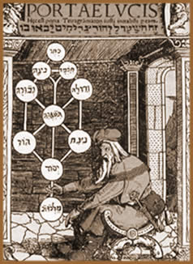

Sob
uma definição generalizada, Cabala pode ser compreendida
como "tratado filosófico-religioso hebraico, que
pretende resumir uma religião secreta que se supõe
haver coexistido com a religião popular dos hebreus".
Porém, esta é uma definição extremamente
simplificada que omite diversos aspectos significativos.
A origem etimológica da
palavra Cabala encontra-se no hebraico como qabbalah
e é comumente grafada de diversas formas: Kabbalah,
Qabbala, cabbala, cabbalah, kabala,
kabalah, kabbala. Originalmente, significa recepção
ou recebimento, no sentido metafórico de "recebimento
do ensinamento" ou "recebimento da sabedoria".
Nos meios de estudo filosóficos
e ocultistas, a Cabala é uma doutrina mística do
judaísmo que tem por objetivo conhecer Deus e o Universo
através de um ensinamento restrito aos seres espiritualmente
iluminados. Porém, segundo o Rabino Joseph Saltoun, a Cabala
é mais democrática e acessível: ''A cabala
é uma sabedoria universal que está na essência
de todas as religiões, por isso qualquer pessoa pode estudar
e praticar''.
Uma das formas de obter o conhecimento
superior seria através da interpretação correta
de textos sagrados, inclusive a Bíblia. Não apenas
da mensagem explícita, mas também dos códigos
implícitos infiltrados na grafia destes livros.
Estes antigos manuscritos são
as bases do misticismo judaico que se desenvolveu ao longo da
história e nos quais encontram-se elementos que posteriormente
seriam reconhecidos como elementos pertencentes à Cabala.
Entre eles estão o Bahir (publicado no início
do século XII e impresso apenas em meados do século
XVII), o Zohar (conjunto de textos sobre a Torah com
uma abordagem mística da natureza divina, natureza da alma,
universo, bem e mal, entre outros), e o Sefer Yetzirah
(Livro da Luz - antigo texto do hebraico de período histórico
não determinado).
O estudo da Cabala pode ser dividido
em duas partes. A Cabala Teórica que tem por objetivo compreender
o equilíbrio do universo pelo estudo das energias espirituais
oriundas de Deus e dos códigos numéricos ocultos
no texto original. A Cabala Mágica que possibilita interferir
em acontecimentos práticos através da meditação
ou recitação dos nomes sagrados de Deus, expressos
em 72 combinações de letras do alfabeto hebraico.
A
Alma e a Cabala
Alguns pontos comuns entre o Zohar
e a tradição da Cabala são encontrados quando
referem-se aos elementos que compõem a alma. Segundo esta
análise, a alma humana é composta de três
partes distintas que são plenamente despertas apenas em
indivíduos evoluídos espiritualmente.
O nefesh é comum
a todos os seres humanos e passa a integrar o indivíduo
no momento de seu nascimento. É a fonte da natureza física
e psicológica. É considerado a parte inferior (irracional)
da alma que está associado aos instintos e desejos físicos.
O ruach é a parte mediana responsável por
virtudes morais e capacidade de distinção entre
o bem e o mal. O ruach é desenvolvido ao longo da vida
e depende da nobreza de valores de cada indivíduo, como
suas crenças e ações. O neshamah
é a alma superior. É o elemento determinante que
distingue o ser humano de outras formas de vida e está
relacionada diretamente ao intelecto. Também é desenvolvido
no decorrer da vida.
 Ainda,
no Raaya Meheimna (manuscrito posteriormente
incorporado ao Zohar) há alusões a outros dois elementos:
o chayyah (permite ao homem a percepção do poder
divino) e o yehidah (nível mais elevado que permite total
integração com Deus).
Ainda,
no Raaya Meheimna (manuscrito posteriormente
incorporado ao Zohar) há alusões a outros dois elementos:
o chayyah (permite ao homem a percepção do poder
divino) e o yehidah (nível mais elevado que permite total
integração com Deus).
Há também elementos
que se manifestam eventualmente na alma humana. O Ruach HaKodesh
permite a capacidade profética. O Neshamah Yeseira
permite uma maior profundidade espiritual ao judeu durante o Shabbat
(descanso semanal que, segundo o judaísmo, foi ordenado
por Deus). Esta habilidade adquirida pela alma pode se desenvolver
ou retroceder totalmente, de acordo com a fé do judeu.
O Neshoma Kedosha que se manifesta nos judeus ao atingirem
a maioridade e está relacionado ao estudo dos mandamentos
da Torah. Assim como o Neshamah Yeseira, o Neshoma Kedosha
também está passível de desenvolvimento ou
regressão, dependendo do empenho de cada indivíduo.
Entretanto, segundo estudiosos
(como o Rabino Joseph Saltoun), a Cabala também aplica-se
em diversas áreas dos conhecimentos e necessidades humanas,
tantos espirituais como físicas. É possível,
por exemplo, compreender a origem da alma, relacionamentos afetivos,
destino e livre arbítrio, por exemplo.
A
Cabala e suas conexões
O estudo cabalístico não
se limita ao universo judaico. A partir do século XVIII
houve um processo de popularização da Cabala entre
diversas tradições ocultistas; favorecendo sua infiltração
e conexão com outras faces do esoterismo, até mesmo
no ocidente. Desse modo, variações cristãs
da Cabala passaram a ser estudadas. A Cabala também passou
a integrar e combinar-se em correntes neopagãs.
Jesus Cristo poderia ter sido um
conhecedor dos mistérios cabalísticos. O Heptameron
(tratado medieval de magia) utiliza-se de símbolos cabalísticos.
Na idade Média, devido à intolerância religiosa,
o estudo da Cabala era secreto. Vários sistemas de Magia
utilizam a cabala como referência. O ocultista francês
Eliphas Levi
foi um dos estudiosos cabalísticos. A Cabala Hermética
(como é conhecida no Ocidente) foi abordada pelo ocultista
inglês Aleister
Crownley; assim como o Amanhecer Dourado de George
Cecil Jones. Em 1922, foi fundado pelo Rabino Berg, na cidade
de Jerusalém, o Centro de Estudos da Cabala, que favoreceu
sua disseminação além dos limites do judaísmo.
A
Árvore da Vida
A Árvore da Vida
é um recurso simbológico que representa alguns conceitos
cabalísticos. É formada por dez Sephira que emanam
de Ain Soph, que é a representação
da própria natureza divina da qual deriva cada sephira.
Cada uma das dez sephira representa uma dimensão para a
realidade. Assim, cada uma funciona como um canal que conduz a
"Luz do Mundo Infinito" até o homem.
Graficamente, as sephira estão
alinhadas em três colunas que estão interligadas
por meio de vinte e duas conexões. Estão dispostas
em camadas triangulares sendo que cada uma está relacionada
a um plano: Emanações (Atziluth), Criações
(Beriah), Formações (Yetzirah)
e Ações (Asiyah). As dez sephiras que compõem
a Cabala são Keter, Chochma, Biná,
Chesed, Gevurah, Tiferet, Netzach,
Hod, Yesod e Malchut.
A
Cabala no século XXI
Atualmente, a Cabala atingiu um
nível de popularidade suficiente a ponto de serem oferecidos
cursos de interpretação cabalística com ênfase
em aspectos práticos da vida cotidiana. Personalidades
como Madonna e Mick Jagger aderiram ao estudo da Cabala. Ainda,
há um Centro de Estudos da Cabala em São Paulo e
Rio de Janeiro.
Se, de certa forma, esta popularidade
obtida pode relegar a Cabala à condição de
uma simples ferramenta de auto-ajuda e autoconhecimento; por outro
lado, há a democratização de uma tradição
milenar e poderosa, que coloca-se ao alcance de qualquer cidadão
que deseje evoluir nos planos espirituais e materiais da própria
existência.
Por
Spectrum